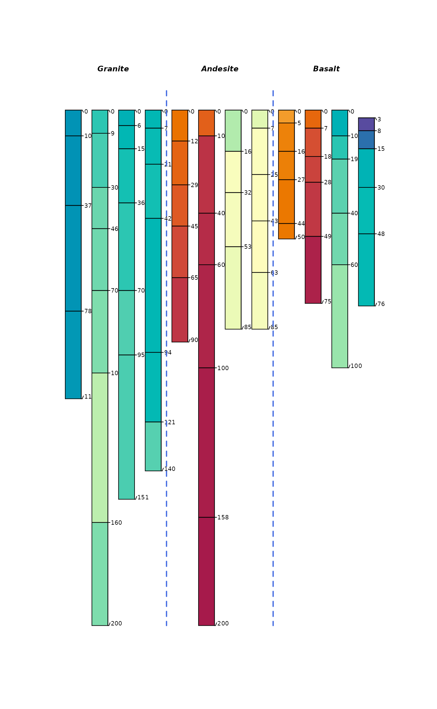
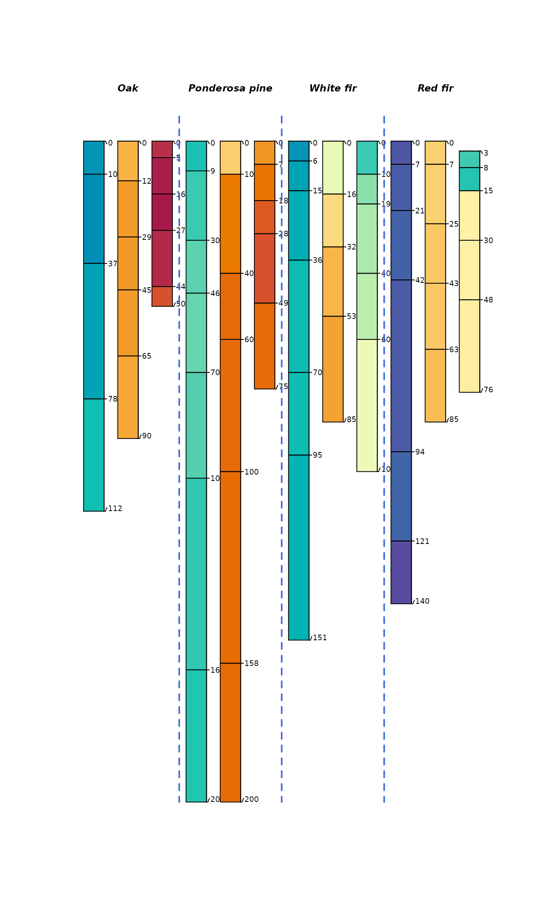

An example SoilProfileCollection, derived from Wilson et al., 2022. Select data extracted from Appendix tables.
Usage
data(wilson2022)Format
A SoilProfileCollection with the following elements. Total elemental analysis by lithium borate fusion.
Horizon level attributes:
name: horizon designation
Al2O3: total Al (wt %)
Fe2O3: total Fe (wt %)
K2O: total K (wt %)
MgO: total Mg (wt %)
Na2O: total Na (wt %)
P2O5: total P (wt %)
SiO2: total Si (wt %)
CaO: total Ca(wt %)
Alo: Oxalate Extractable Al (g/kg)
Feo: Oxalate Extractable Fe (g/kg)
Fed: Dithionite extractable Fe (g/kg)
Fed_minus_Feo: Crystalline Fe (hydr)oxides (g/kg)
CIA: Chemical Index of Alteration, see original paper (ratio, unitless)
Fed_div_Fet: (ratio, unitless)
Fet: Total Fe from lithium borate fusion (g/kg)
resin_Pi: Hedley phosphorus fractions (mg/kg)
NaHCO3_Pi: Hedley phosphorus fractions (mg/kg)
labile_Pi: Sum of resin Pi and NaHCO3 Pi (mg/kg)
NaCO3_Po: Hedley phosphorus fractions (mg/kg)
NaOH_Pi: Hedley phosphorus fractions (mg/kg)
NaOH_Po: Hedley phosphorus fractions (mg/kg)
Ca_Pi: Hedley phosphorus fractions (mg/kg)
organic_P: Sum of NaHCO3 and NaOH Po fractions (mg/kg)
total_P: Total P from lithium borate fusion (mg/kg)
occluded_P: Difference between total P and sum of Hedley P fractions (mg/kg)
top: horizon top depth (cm)
bottom: horizon bottom depth (cm)
pedonID: pedon ID (serial number)
Site level attributes:
pm: parent material group
biome: biome
References
Stewart G. Wilson, Randy A. Dahlgren, Andrew J. Margenot, Craig Rasmussen, Anthony T. O'Geen. 2022. Expanding the Paradigm: The influence of climate and lithology on soil phosphorus, Geoderma: 421. doi:10.1016/j.geoderma.2022.115809
Examples
data(wilson2022)
groupedProfilePlot(wilson2022, groups = 'pm',
group.name.offset = -15, label = 'biome',
name.style = 'center-center', color = 'CIA',
cex.names = 0.66, cex.id = 0.66, width = 0.3)

groupedProfilePlot(wilson2022, groups = 'biome',
group.name.offset = -15, label = 'pm',
name.style = 'center-center', color = 'Fet',
cex.names = 0.66, cex.id = 0.66, width = 0.3)
